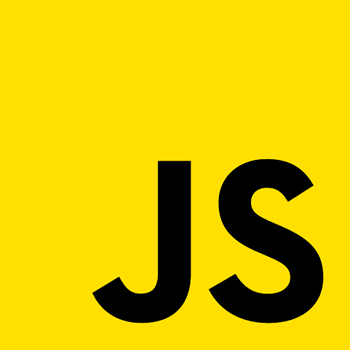

Oi, tudo bom?
Eu sou Josélio Samy, um estudante, desenvolvedor front end e aspirante a designer que mora em João Pessoa, PB, com grande afinidade em HTML, CSS e JavaScript voltada para sites responsivos e minimalistas.
Recentemente me formei em Manutenção de computadores pela escola Oswaldo Pessoa. Foi um curso técnico que durou 3 demorados anos, mas consegui superar todos os obstáculos, que foram muitos. Enquanto estudante, nunca tive apreço por codar/programar, mas logo que terminei os estudos, isso se tornou cada vez mais atrativo e, hoje olha eu aqui, codando sempre que posso. E o que não poderia faltar é uma graduação, mas ai que vem um lance legal, meu curso de graduaçao é de ciência da computação, na UFPB(Universidade Federal da Paraíba, e como eu iria ter que mexer com programação de um jeito ou de outro, resolvi começar bem de baixo e, o HTML e CSS foram minha escolha, pois eu já tinha mexido algumas vezes com essas tecnologias na infância, porém não sabia de nada, apenas modificava valores, isso era muito legal, daí a razão principal por hoje eu ser um desenvolvedor front end.
Sabe o que é poder fazer o que quiser, qualquer design, milhares de funcionalidades, efeitos, animações, etc.? Isso é ser um desenvolvedor front end. Acredito que essa breve descrição possa sem dúvidas esclarecer meu apreço pela carreira.
Como é meu uso dessas tecnologias?
Como já citado, eu utilizo do HTML, CSS e o JavaScript para criação dos meus projetos web. Vamos ver um pouco sobre eles, bora!
HTML
O HTML é uma tecnologia que surgiu na década de 90, criado por Tim Berners-Lee. Essencialmente, o HTML é uma linguagem de marcação, e serve apenas para organizar o conteúdo do site em categorias, onde as mesmas ficam a serem definidas pelo desenvolvedor.
>CSS
O CSS é a tecnologia por trás de todo o design de um site, ele é o responsável por estilizar o site, seja modificar o tamanho dos objetos, cores, animaçôes, inserir imagens(apesar de poder ser feito pelo próprio HTML), etc.
JavaScript
O JavaScript é o responsável pela dinamização do site, como por exemplo: Clicar em algo e aparecer um alerta, trocar propriedades do html e css em tempo real, sem precisão de reload da página, etc.